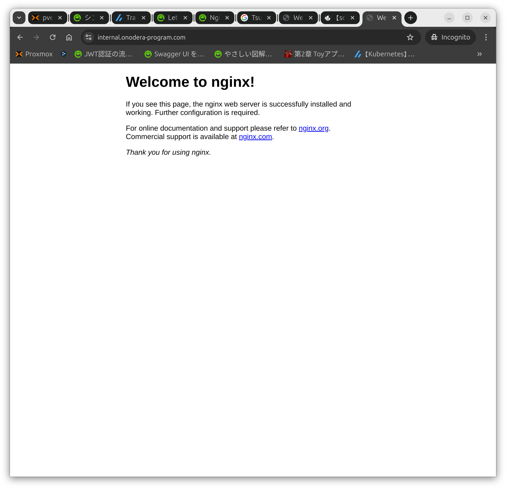

背景
ローカルの開発環境をHTTPSでアクセスしたいが、自己署名証明書だと警告が出たりと問題があるので、正規の証明書を発行して使用する
前回の記事で証明書を発行したので、今回はnginxに証明書をコピーし、HTTPSでアクセスできるようにする
環境
2VM
- Unbound(DNS)
- unbound 1.19.2.
- Nginx
- nginx version: nginx/1.24.0 (Ubuntu)
nginxのインストールと起動
インストールと状態の確認をする
|
|
“Active"が"active (running)“になっていればOK
|
|
IPアドレスにアクセスしてnginxのスタートページが表示されることを確認する
証明書を入れるフォルダを作成し、証明書ファイルをアップロードする
証明書を入れるフォルダを作成する
|
|
ローカルのPCからNginxがインストールされているサーバーへ証明書ファイルをアップロードする
|
|
|
|
Nginxの設定ファイルを作成する
設定ファイルを作成し、編集します
|
|
- default.conf
|
|
- “server_name"は使用するドメインを記載する
- “ssl_certificate"と"ssl_certificate_key"はアップロードしたファイルをフルパスで記載する
設定を読み込むためにnginxを再起動する
|
|
DNSサーバーの設定をする
ローカル内にあるDNSサーバー（今回はUnboundを構築した）に、IPアドレスとドメイン名を設定する
アクセスするPCのDNSを上記設定がされているDNSサーバーのIPアドレスを指定する
ドメイン名＋HTTPSでアクセスしてみる
“https://ドメイン名"にアクセスする
証明書の警告等が表示されずにアクセスできればOK 
その他
あとは同じ要領で証明書を他のサーバーに登録して、ローカルのサーバーにHTTPSでアクセスできるようにする
k8sのIngressに登録すれば、ローカル内でHTTPS＋ドメイン名でアクセスできるようになる、はず
参考URL
- Let’s Encrypt で Nginx にSSLを設定する
- https://qiita.com/HeRo/items/f9eb8d8a08d4d5b63ee9
- Nginxに自己署名証明書を設定してHTTPS接続してみる
- https://qiita.com/ohakutsu/items/814825a76b5299a96661
- Linuxでリモート・ローカル間でファイルを転送するコマンド
- https://uxmilk.jp/50946
- 127.0.0.1にLet’ Encryptで証明書を発行してhttpsでのローカル開発と本番の差異を低減するための具体的な手順
- https://scrapbox.io/nwtgck/127.0.0.1%E3%81%ABLet'_Encrypt%E3%81%A7%E8%A8%BC%E6%98%8E%E6%9B%B8%E3%82%92%E7%99%BA%E8%A1%8C%E3%81%97%E3%81%A6https%E3%81%A7%E3%81%AE%E3%83%AD%E3%83%BC%E3%82%AB%E3%83%AB%E9%96%8B%E7%99%BA%E3%81%A8%E6%9C%AC%E7%95%AA%E3%81%AE%E5%B7%AE%E7%95%B0%E3%82%92%E4%BD%8E%E6%B8%9B%E3%81%99%E3%82%8B%E3%81%9F%E3%82%81%E3%81%AE%E5%85%B7%E4%BD%93%E7%9A%84%E3%81%AA%E6%89%8B%E9%A0%86
- ローカルホスト（127.0.0.1）用のSSL証明書を取得する
- https://hiroshi-nagayama.com/%E3%83%AD%E3%83%BC%E3%82%AB%E3%83%AB%E3%83%9B%E3%82%B9%E3%83%88%EF%BC%88127-0-0-1%EF%BC%89%E7%94%A8%E3%81%AEssl%E8%A8%BC%E6%98%8E%E6%9B%B8%E3%82%92%E5%8F%96%E5%BE%97%E3%81%99%E3%82%8B/
- ローカル開発環境の https 化
- https://blog.jxck.io/entries/2020-06-29/https-for-localhost.html